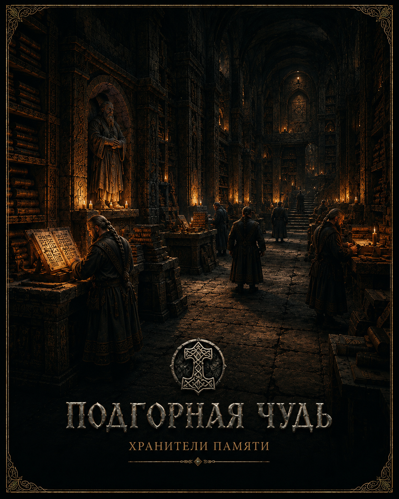

Цивилизации
Народы Ильнира

Подгорная Чудь
Хранители Памяти.

Древляне
Хранители Живого Мира.

Побережье Баронов
Хранители Морей.

Храмовый Собор
Хранители Веры.

Башня Магии
Хранители Знания.

Пепельные Рода
Хранители Разлома.
Людские Княжества
Запись ещё не открыта Архивом.
Северные Кланы
Запись ещё не открыта Архивом.
Степные Кочевники
Запись ещё не открыта Архивом.
Восточные Гильдии
Запись ещё не открыта Архивом.
Тени Болот
Запись ещё не открыта Архивом.
Осквернённые
Запись ещё не открыта Архивом.